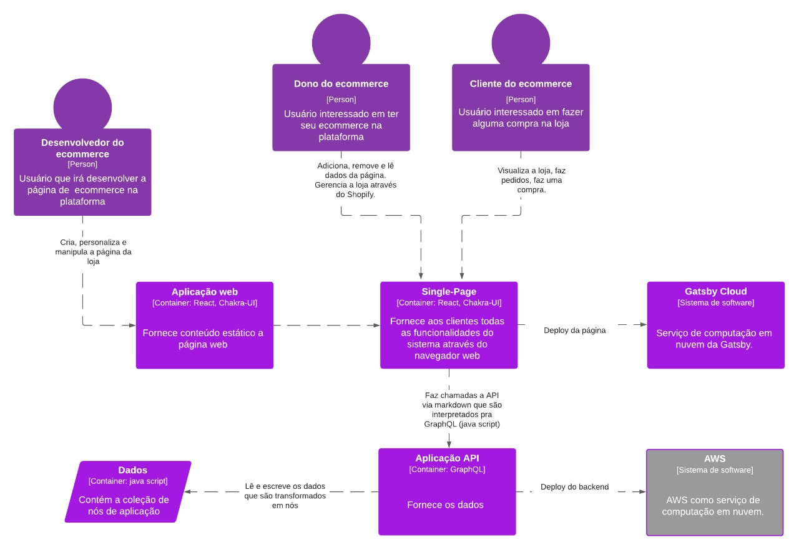
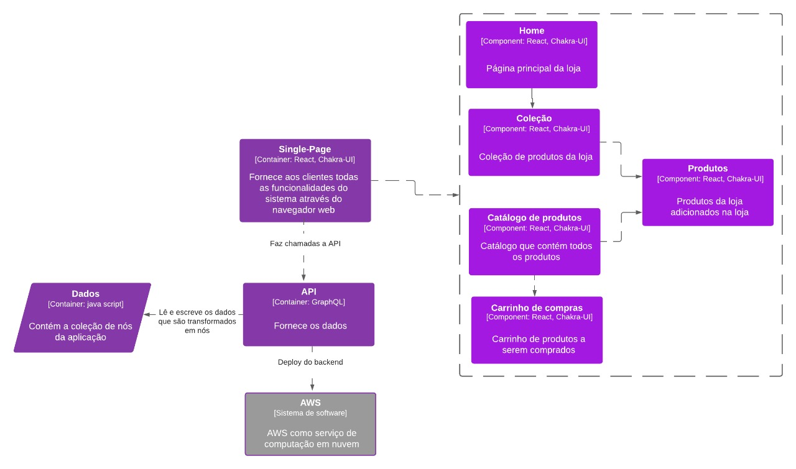

Arquitetura do Gatsby Stater Shopify
Autores
Este documento foi produzido por Jardely Maris da SIlva Santos.
- Matrícula: 117110274
- Contato: jardely.santos@ccc.ufcg.edu.br
- Projeto documentado: https://github.com/gatsbyjs/gatsby-starter-shopify
Descrição Arquitetural - Gatsby Starter Shopify
Neste documento, é descrito um serviço de criação de sites e aplicações web, o Gatsby Starter Shopify. Essa descrição foi baseada principalmente no modelo C4.
Descrição geral sobre o Gatsby Starter Shopify
O Gatsby é um framework que tem como objetivo facilitar a criação de sites e aplicações web. Ele é baseado em React e no build gera arquivos estáticos que serão acessados pelos usuários. Isso faz com que, com a ajuda do Gatsby, seja mais fácil criar sites com suporte a SEO e que sejam mais rápidos, além de possuir muitos plugins facilitando ainda mais a experiência.
O Gatsby Shopify é uma especificação do Gatsby, que é uma plataforma de e-commerce que possibilita a criação de lojas online e facilita a compra e venda de produtos pela internet. Gatsby Starter Shopify é uma parte do Shopify, a qual permite que a página da loja seja desenvolvida usando react.
O site oficial do Gatsby é: https://www.gatsbyjs.com/
O serviço Gatsby Starter Shopify
Objetivo Geral
Implementar um serviço que facilite a abertura de novas lojas online.
Objetivos Específicos
Além de poder proporcinar a facilidade de iniciar um ecommerce, o Gatsby Starter Shopify permite que um iniciante possa personalizar a sua loja e até adicionar plugins que irão ajudar a gerenciar, encontrar clientes e até impulsionar as vendas. Para isso, o Gatsby Starter Shopify traz um modelo padrão da página que pode ser desenvolvida e customizada usando React e Chakra-UI.
Contexto
O Gatsby Starter Shopify é uma loja padrão que irá guiar o desenvolvedor a implementar a loja personalizada de acordo com o desejo do dono da loja. No admin do Shopify o dono da loja pode visualizá-la e gerenciá-la. O cliente, por sua vez, poderá visualizar e fazer compras.
O Gatsby tem vários plugins que facilitam o desenvolvimento.O Starter Shopify faz uso de alguns desses plugins, como por exemplo, para acessar o backend ou até fazer deploy. Portanto, a grande maioria dos serviços que são utilizados nesse sistema são desenvolvidos pela Gatsby. Um sistema externo que é usado é o Amazon Web Service (AWS) para fazer o deploy do backend.

Containers
O desenvolvedor cria e personaliza a loja a partir da APlicação Web usando React, Chakra-UI, markdown e os plugins da Gatsby para implementar as funcionalidades. A página web da loja é gerenciada pelo dono que pode adicionar, remover, editar itens através do admin da Shopify e por fim, visualizar a sua loja. Os clientes podem visualizar a loja, fazer pedidos, uma compra, etc.
A página web tem o deploy na Gatsby Cloud que é o serviço de nuvem da Gatsby. Os dados da página são obtidos através de chamadas na API via markdown que são interpretados pelo plugin gatsby-plugin-image que faz as requisições em GraphQL. Gatsby faz uso do Redux como armazenamento. Os plugins do Gatsby processam os dados transformando-os em nós que são adicionados numa coleção de nós do Redux. Ele armazena essas coleções na memória durante o tempo de construção ou desenvolvimento e consultas GraphQL com base em um esquema GraphQL gerado automaticamente.
Por fim, a API tem o seu deploy na Amazon Web Service (AWS).

Components
O diagrama abaixo contém os principais componentes do sistema:
-
Home: A página principal da loja a qual contém informações sobre a loja e as coleções.
-
Coleção: A coleção é composta por produtos. Sua função é tornar os produtos mais acessíveis, ou seja, mais fáceis de ser encontrado pelos clientes.
-
Catálogo: É a página que contém a listagem de todos os produtos do catálogo.
-
Carrinho de compras: É composto pelos produtos os quais o cliente marcou para comprar.
-
Produtos: São os itens adicionados na loja pelo dono ou admistrador da loja.

Visão da informação
Ao criar a loja no admin do Shopify, é possível desenvolver a página da loja a partir do Gatsy Starter Shopify usando as credenciais de sua loja. Ainda no admin, é possível adicionar dados como produtos, coleções, etc. Isso independe do desenvolvimento loja. Caso a página não seja personalizada, o Gatsby Starter Shopify disponibiliza um padrão o qual já pode ser vista pelos clientes. Caso a página tenha sido desenvolvida, é feito o deploy na Gatsby Cloud. Por fim, a loja fica visível e disponível para os clientes.